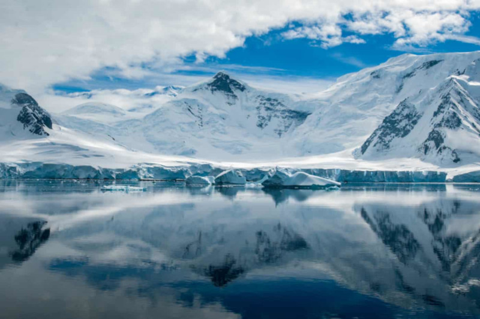

Antártida
Antártida ou Antártica Antártida ou Antártica é o mais meridional e o segundo menor dos continentes (maior apenas que a Austrália),com uma superfície de 14 milhões de quilômetros.Rodeia o polo Sul, e por esse motivo está quase completamente coberta por enormes geleiras (glaciares), exceção feita a algumas zonas de elevado aclive nas cadeias montanhosas e à extremidade norte da península Antártica. Sua formação se deu pela separação do antigo supercontinente Gondwana há aproximadamente 100 milhões de anos e seu resfriamento aconteceu nos últimos 35 milhões de anos.
Características